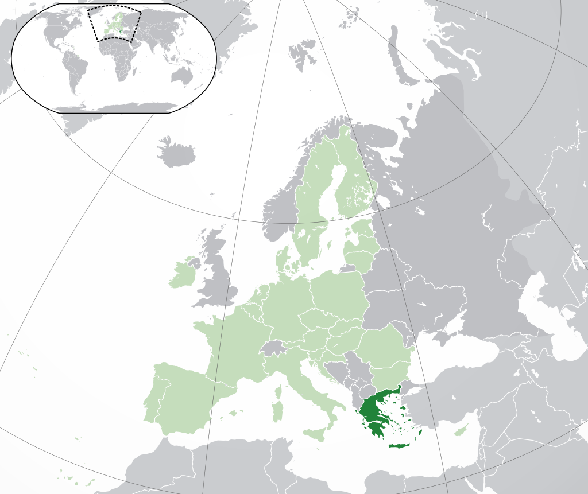

 Grecia se află amplasată strategic la intersecția între Europa, Asia de Vest și Africa, și se învecinează la nord-vest cu Albania, la nord cu Macedonia de Nord și cu Bulgaria, și la nord-est cu Turcia. Țara este formată din nouă regiuni istorico-geografice: Macedonia, Grecia Centrală, Pelopones, Tesalia, Epir, Insulele din Marea Egee (inclusiv Dodecanezele și Cicladele), Tracia de Vest, Creta și Insulele din Marea Ionică. Marea Egee se află la est de partea continentală, Marea Ionică se află la vest, iar Marea Mediterană la sud. Grecia are cea mai lungă coastă din bazinul Mediteranei și a 11-a ca lungime din lume, cu 13.676 km lungime, deținând și un mare număr de insule (aproximativ 1.400, dintre care 227 sunt locuite). Optzeci la sută din teritoriul grec este format din munți, dintre care cel mai înalt este Muntele Olimp cu 2.917 m.